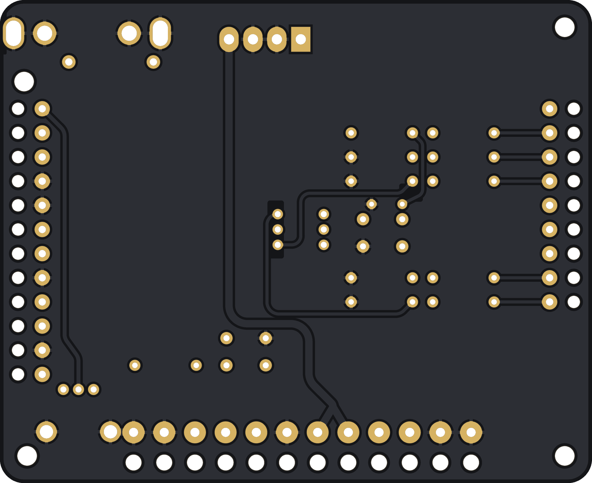

What it is
Squeak Check stands in for the game. It supplies +5 V and +12 V, drives the four sound-select lines and the strobe the game's CPU board would drive, holds or releases RESET, gives the board its volume pot, and brings the audio out to two RCA jacks for an amp.
- Size: 98 × 80 mm, 2 layers, all through-hole, about $20 in parts. The biggest single part is the $7 hex dial.
- Controls: a 16-position hex dial (sound 0–F), a PLAY button, a RESET button and an on-board 1k volume pot.
- Power in: a 4-pin KK-396 header (+5 V, GND, GND, +12 V) from any bench supply.
- Out to the sound board: three wire harnesses, J1, J2 and J3, soldered into the tester. Their other ends carry the plugs that go on the sound board.
- Audio out: line level on both RCA jacks. Feed it to an amp or powered speaker, not a bare speaker.
Each harness wire passes through two holes. It goes up through a bare hole with its insulation on, then the stripped end solders into the plated hole next to it. The wire is held by its jacket, so bending it doesn't stress the solder joint.

How the sound board works in a game
The Cheap Squeak Deluxe and Sounds Good are computers in their own right. The game's CPU board puts a 4-bit number on J1 and pulses a strobe line, and the sound board's own 68000 plays whatever that number means in its ROMs. Some games also have other sound hardware alongside it; in Spy Hunter the Super Sound I/O board makes the effects (see below).
The chain is the same on the Cheap Squeak Deluxe and the Sounds Good; MAME's source notes the two boards are almost identical.
- Command in: the four bits land on the 6821 PIA's port B. The strobe (SIRQ) hits the PIA's CA1 input, which interrupts the 68000 so it reads the nibble.
- Status out: two PIA outputs come back to the game as STAT0 and STAT1 on J1, so the game can tell what the sound board is doing.
- Sound out: the 68000 writes 10-bit samples to an AD7533 DAC, split 8 bits on PIA port A and 2 on port B. Three LM359 low-pass stages smooth it, and an MC3340 attenuator sets the volume from the cabinet pot's wiper voltage.
- Reset: J2's RESET pins are active-low. Pulling them to ground holds the 68000 in reset; the game can use this to restart the sound board.
A short history of Midway's sound boards
Midway's early MCR video games (1981–84) put sound on a board that also handled the game's inputs and outputs, hence the names Sound I/O and Super Sound I/O (SSIO). Each had a Z80 driving two AY-3-8910 tone chips, and they carried Kick, Solar Fox, Tron, Journey and Tapper. For speech, Midway borrowed Bally's pinball Squawk & Talk board (6802 CPU plus a TMS5200 speech chip) for Discs of Tron and NFL Football.
From 1983 the sound boards got their own microprocessors and DACs and were built to take 4-bit commands from the game. The pinball Cheap Squeak (a 6803, simple tones, no speech) was the budget board. Its 68000-based video-game cousin, the Cheap Squeak Deluxe, went into Spy Hunter. The 6809 Turbo Cheap Squeak and the 68000 Sounds Good followed, and the Sounds Good built on the CSD's design and carried most of Midway's late MCR and MCR-68k games. After WMS bought Midway in 1988, games like Arch Rivals and Pigskin 621AD moved to Williams sound boards instead.
| Board | Years | CPU | Representative games |
|---|---|---|---|
| Sound I/O | 1981 | Z80 + 2× AY-3-8910 | Kick, Solar Fox |
| Super Sound I/O (SSIO) | 1981–84 | Z80 + 2× AY-3-8910 | Satan's Hollow, Tron, Journey, Tapper, Spy Hunter (effects) |
| Squawk & Talk | 1981–85 | 6802/6808 + TMS5200 speech | Pinball: Flash Gordon, Eight Ball Deluxe, Mr. & Mrs. Pac-Man. Video: Discs of Tron, NFL Football |
| Cheap Squeak (pinball) | 1984–86 | 6803 | X's & O's, Kings of Steel, Black Pyramid, Spy Hunter pinball, Lady Luck |
| Cheap Squeak Deluxe | 1983–85 | 68000 | Spy Hunter (music), Turbo Tag (prototype) |
| Turbo Cheap Squeak | 1984–87 | 6809 | Video: Demolition Derby, Sarge, Max RPM, Spy Hunter II. Pinball: Black Belt, Strange Science, City Slicker |
| Sounds Deluxe (pinball) | 1986–87 | 68000 | Motordome, Special Force, Heavy Metal Meltdown, Dungeons & Dragons |
| Sounds Good | 1986–88 | 68000 | Rampage, Power Drive, Star Guards, Xenophobe, Spy Hunter II, Blasted |
Years are the release years of the games listed in MAME and PinWiki, not official production dates.
Spy Hunter & Xenophobe
Spy Hunter (1983): an add-on to the Super Sound I/O
Spy Hunter runs on Midway's MCR-III system: a Z80 CPU board, a video board, and a Super Sound I/O board with a Z80 and two AY-3-8910 sound chips (the sit-down cabinet uses a Sound I/O variant with stereo panning). The SSIO makes all the game-play sounds: everything except the music.
The Cheap Squeak Deluxe (A080-91671) was added for one job: playing the Peter Gunn theme. Owners with a dead CSD report a game that plays normally with every effect but no music, and pressing the red TEST button on a working CSD plays the music on its own. The music has its own amplifier channel in the cabinet. The CSD has its own 68000, 32 KB of sound ROM (U7, U8, U17, U18) and a 16 MHz oscillator.
The main Z80 talks to it through output port 4. In MAME's driver, bits 0–3 of that port are the CSD's sound number and bit 4 is SIRQ. The same port also drives the lamp driver board and the analog-input mux, so the CSD shares its wires with other hardware. The CSD's two status bits come back on input port 1.
Xenophobe (1987): the only sound board in the game
Xenophobe runs on the MCR-68k system, whose main CPU is itself a 68000. There is no SSIO and no second sound board: the Sounds Good makes every sound in the game. MAME's Xenophobe driver has the Sounds Good as its only sound device, and owners with a failed Sounds Good report a completely silent game.
The Sounds Good is built on the same A080-91671 bare board as the Cheap Squeak Deluxe, with a larger memory map: up to 256 KB of sound ROM, which Xenophobe fills. The main 68000 writes a control word where bits 0–3 are the sound number and bit 4 is the strobe, the same four-bits-plus-strobe interface Spy Hunter uses.
The interface: J1, J2 and J3
The three harnesses on Squeak Check carry every pin of the sound board's J1, J2 and J3 in the same order and under the same names, including duplicates and unused pins, so each wire lands where the original harness had it.
| Conn. | Pin | Name | What Squeak Check does with it |
|---|---|---|---|
| J1 · commands · 0.100 in · 22 AWG | |||
| J1 | 1 | SPARE | Not connected |
| J1 | 2 | SIRQ | 1k series; 10k pull-up to +5 V; PLAY pulls it low, 1 µF debounce |
| J1 | 3, 4, 8, 9 | SOUND1, SOUND0, SOUND3, SOUND2 | 1k series, 10k pull-down; the hex dial pulls each bit to +5 V |
| J1 | 5, 6 | STAT1, STAT0 | Wire terminals only (outputs from the sound board) |
| J1 | 7 | KEY | Keyed position, no wire |
| J2 · power and reset · 0.156 in · 18 AWG | |||
| J2 | 1, 2 / 11, 12 | AGND / LGND | Ground |
| J2 | 3, 4 | +5V | From PWR1 |
| J2 | 5, 6 | +12V | From PWR1 |
| J2 | 7 | E-GND | Tied to ground |
| J2 | 8 | KEY | Keyed position, no wire |
| J2 | 9, 10 | RESET | 10k pull-up to +5 V; the RESET button pulls it low |
| J3 · audio and volume · 0.100 in · 22 AWG | |||
| J3 | 1 | VOL_WIPER | Volume pot wiper |
| J3 | 10, 12 | VOL_END_A, VOL_END_B | Volume pot ends (J3-12 is +12 V through 2.7k on the sound board) |
| J3 | 2, 3 | AUDIO_L, AUDIO_R | To the white and red RCA jacks |
| J3 | 4, 5, 8, 11 | AGND | Ground |
| J3 | 6, 7 | AUDIO6, AUDIO7 | Wire terminals only |
| J3 | 9 | KEY | Keyed position, no wire |
The volume pot is wired so clockwise is louder. The MC3340 attenuates more as its control voltage rises, so turning toward the +12 V end (J3-12) turns the sound down. A full pin-by-pin list with hole coordinates is in Harness_Pin_Map.csv.
Hooking up a Cheap Squeak Deluxe
J1 and J3 sit side by side on the bottom edge of the board and J2 runs along the top edge, so the three harness plugs go on from opposite sides. The Sounds Good uses the same bare board, so the connectors are in the same places.
The board has no connector housings, just rows of bare tinned square posts: 0.025 in posts on 0.100 in pitch for J1 and J3, and 0.045 in posts on 0.156 in pitch for J2. Midway's harnesses plug onto them with insulation-displacement (IDC) connectors; TE's MTA-100 and MTA-156 families fit these posts. Each plug has one keyed position so it can't go on shifted: J1 pin 7, J2 pin 8 and J3 pin 9.
- Pin 1: J1 and J3 count from their left-hand ends; J2 counts from its right-hand end.
- Harness plugs for Squeak Check: TE MTA-100 9-position (3-640440-9) for J1, MTA-100 12-position (4-640440-2) for J3, and MTA-156 12-position for 18 AWG (4-640599-2) for J2, with an MTA-156 key (640629-1) in J2's key position.
- Board variants: the Spy Hunter manual lists the CSD as A080-91671; MAME names a Spy Hunter board A080-91671-E000.
Using it
Power up and count the sound board's LED flashes first; only a board that passes its self-test is worth dialing sounds on.
- Plug J1, J2 and J3 onto the sound board, connect the RCA jacks to an amp, and turn the volume knob fully counter-clockwise.
- Apply power. The LED flashes once per passed test: flashes 1–4 are the ROMs (U7, U8, U17, U18), 5 is RAM (U6, U16) and 6 is the PIA (U9). Where it stops is the failed step.
- Dial a sound 0–F and press PLAY. Turn the volume up.
- Press RESET to restart the sound board at any time. It holds RESET low only while pressed.
One press sends one 4-bit nibble. The boards' firmware generally reads commands as pairs of nibbles, so some sounds need two presses: dial the first nibble, PLAY, dial the second, PLAY. The meaning of each command lives in the game's sound ROMs and isn't documented in MAME, so expect some exploring.
The red TEST button on the sound board itself fires a level-7 interrupt on the 68000. What happens next is up to the game's ROMs; on a Spy Hunter CSD it plays the music.
Build it
Everything needed to order boards and parts is in the fab folder. Any 2-layer PCB fab can make it from the Gerbers: FR-4, 1.6 mm, 1 oz copper, any mask colour with white silk, HASL or ENIG, 98 × 80 mm.
| Ref | Qty | Part | Mfr part # |
|---|---|---|---|
| On the board | |||
| SW1 | 1 | 16-position coded hex rotary switch, Grayhill | 94HBB16T |
| SW2, SW3 | 2 | 6 × 6 mm tactile switch, Omron (PLAY, RESET) | B3F-1000 |
| RV1 | 1 | 9 mm 1k linear pot, knurled shaft, Bourns | PTV09A-4020U-B102 |
| C1 | 1 | 1 µF 50 V X7R radial, 5.08 mm, KEMET | C330C105K5R5TA |
| RS0–RS3, RSIRQ | 5 | 1k ¼ W 1% metal film, 0.4 in spacing, YAGEO | MFR-25FBF52-1K |
| RPD0–RPD3, RIRQ, RRST | 6 | 10k ¼ W 1% metal film, 0.4 in spacing, YAGEO | MFR-25FBF52-10K |
| PWR1 | 1 | KK-396 4-pin friction-lock header, Molex | 26-60-4040 |
| J4 | 1 | Dual RCA jack, right angle, Same Sky | RCJ-2123 |
| Power cable | |||
| PWR1 mate | 1 + 4 | KK-396 4-pin housing + crimp terminals, Molex | 09-50-3041, 08-50-0106 |
| Harness plugs (sound board end) | |||
| J1 plug | 1 | MTA-100 9-pos, 22 AWG, TE | 3-640440-9 |
| J3 plug | 1 | MTA-100 12-pos, 22 AWG, TE | 4-640440-2 |
| J2 plug | 1 | MTA-156 12-pos, 18 AWG, TE | 4-640599-2 |
| J2 key | 1 | MTA-156 polarizing key, TE | 640629-1 |
| Wire and hardware | |||
| Wire | — | 22 AWG UL1007 (J1, J3) and 18 AWG UL1007 (J2), Alpha Wire | 3051, 3055 |
| MH1–MH4 | 4 | M3 standoffs and screws (optional); keep the head ≤ 5.5 mm at the hole next to the pot | — |
Design notes
Everything on the board exists to fake the game's side of the harness safely; there are no active parts.
- Command lines: each SOUND bit has a 1k series resistor and a 10k pull-down, so an open dial position reads 0 and a mis-plugged harness can't dump +5 V straight into a sound-board pin.
- Hex dial: a Grayhill 94HBB16T coded rotary switch. Its common is on +5 V and its 1-2-4-8 outputs drive SOUND0–SOUND3.
- SIRQ: a 10k pull-up holds it high; PLAY pulls it to ground through 1k. A 1 µF cap across the button (about 10 ms with the 10k) stops contact bounce from firing several commands.
- RESET: 10k pull-up to +5 V, button to ground. An earlier revision held RESET low permanently, which would have kept the sound board in reset.
- E-GND (J2-7): tied to ground. The Sounds Good grounds it on the board; the CSD uses it as the return for its input filter caps.
- Volume: a board-mounted 1k linear pot with a knurled shaft (Bourns PTV09A-4020U-B102), replacing Midway's 0–1k cabinet pot.
- Strain relief: every harness wire goes through a bare hole with its jacket on, then solders into the plated hole beside it.
- Layout: all traces use rounded corners, with a ground pour on the back. Design-rule and connectivity checks pass with no shorts, opens or copper islands, and the Gerbers were re-read with an independent parser to confirm they match.
Compatibility
Three Midway boards share this J1/J2/J3 pinout and command interface, so Squeak Check works with all of them.
| Board | CPU | Games |
|---|---|---|
| Cheap Squeak Deluxe (A080-91671) | 68000 | Spy Hunter, Turbo Tag (prototype) |
| Sounds Good (same bare board, different parts and ROMs) | 68000 | Rampage, Power Drive, Star Guards, Xenophobe, Spy Hunter II, Blasted, International Team Laser (prototype) |
| Turbo Cheap Squeak | 6809 | Sarge, Max RPM, Demolition Derby, Spy Hunter II (second sound board) |
Not compatible: the Super Sound I/O (SSIO), and the Williams System 11 sound boards in Arch Rivals, Pigskin 621AD and Tri-Sports. The pinball-era Bally boards (Cheap Squeak, Sounds Deluxe, pinball TCS) use different harnesses and weren't checked.
Sources
- Spy Hunter Parts and Operating Manual (Bally Midway), Internet Archive: Cheap Squeak Deluxe schematic, assembly drawing and parts list
- MAME source, mcr3.cpp: Spy Hunter's MCR-III hardware and output port 4
- MAME source, mcr68.cpp: Xenophobe's MCR-68k hardware and Sounds Good control word
- MAME source, csd.cpp and midway_sound.cpp: Cheap Squeak Deluxe and Sounds Good emulation
- MAME source, mcr.cpp: early MCR boards, Sound I/O and Super Sound I/O
- Forum: Spy Hunter Peter Gunn sound missing and Zdziarski, Arcade Hardware Hacking Part III: the CSD plays only the Peter Gunn theme
- Forum: Xenophobe no sound: a failed Sounds Good leaves Xenophobe silent
- Forum: Spy Hunter harness J1 connector: the original harness's IDC connectors
- PinWiki: Bally/Stern and PinRepair: Bally 6803 games: Bally pinball sound boards and the games that used them
- TE Connectivity MTA-100 and MTA-156 connectors